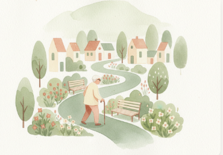

מאשה רובין
סיוע לרשויות מקומיות בפיתוח שירותים ויוזמות המאפשרים
הזדקנות בריאה ועצמאית בקהילה
ייעוץ לרשויות וארגונים | הרצאות והכשרות

האוכלוסייה בישראל הולכת ומזדקנת, ורשויות מקומיות נדרשות להתמודד עם צרכים הולכים וגדלים בתחום הבריאות, הרווחה והשירותים הקהילתיים של האוכלוסייה המבוגרת. במקביל, יותר ויותר אנשים מבקשים להמשיך לחיות בביתם ובקהילתם לאורך זמן.
גרונטולוגיה סביבתית עוסקת בקשר בין הסביבה שבה אנו חיים לבין בריאות, תפקוד ואיכות החיים בגיל המבוגר. התחום בוחן כיצד הבית, השכונה והשירותים הקהילתיים יכולים לתמוך בעצמאות, בשימור תפקוד ובהשתתפות בחיי הקהילה לאורך תהליך ההזדקנות ובעת שיקום.
גישה זו מציעה לרשויות מקומיות ולארגונים קהילתיים כלים לחשיבה על המרחב הביתי והקהילתי כמשאבים מרכזיים בקידום בריאות ובשימור עצמאות. פיתוח וסנכרון של שירותים, יוזמות וסביבות חיים תומכות מאפשרים לאנשים להזדקן בקהילה בבטחה, לשמר תפקוד לאורך זמן ולחזק את איכות החיים בגיל המבוגר.
הידע והניסיון המקצועי שלי בתחום הגרונטולוגיה, הבריאות והשיקום התגבשו לאורך שנים של מחקר והתנסות מקצועית בישראל וביפן. ניסיוני כולל עבודה במערכות בריאות, פעילות בסטארטאפ בתחום הבריאות וייעוץ לרשויות מקומיות וארגונים קהילתיים.
שילוב ניסיון זה מאפשר לי לחבר בין הבנה של מערכות הבריאות והשיקום לבין חשיבה על המרחב הביתי והקהילתי כמשאב מרכזי בקידום בריאות, בשימור תפקוד ובדחיקת תלות בגיל המבוגר.
בעבודתי אני מסייעת לרשויות וארגונים לפתח יוזמות ושירותים התומכים בעצמאות, בתהליכי שיקום ובאיכות החיים של אנשים מבוגרים בקהילה.
הזמנת הרצאות, סדנאות או ייעוץ לרשויות וארגונים.
אשמח לשוחח ולהתאים את התוכן לצרכי הקהילה והארגון.